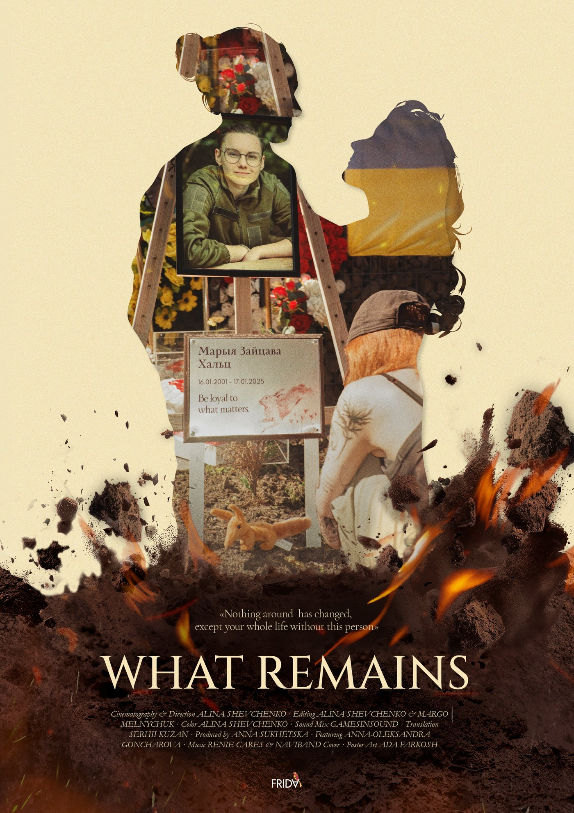
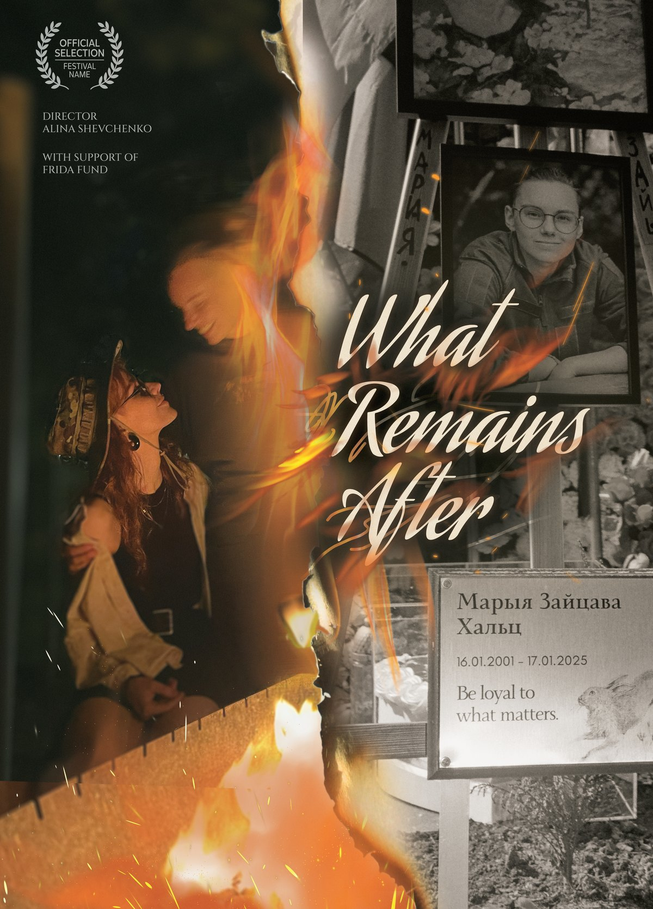
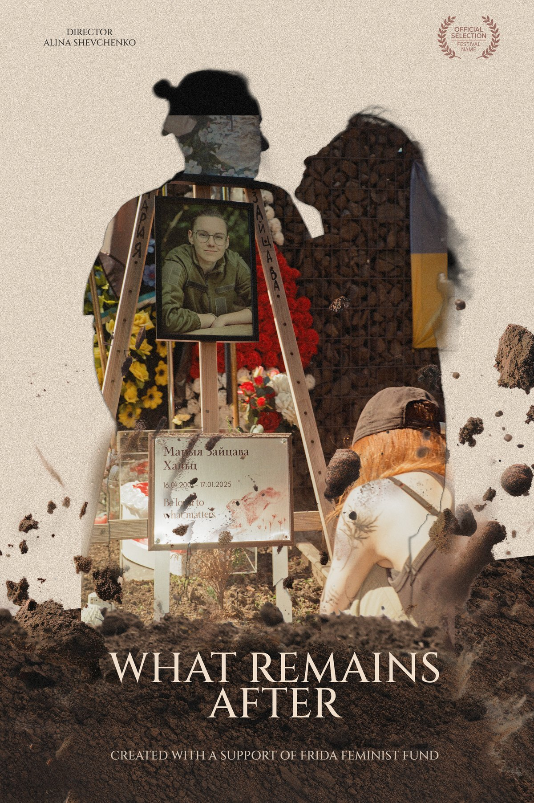
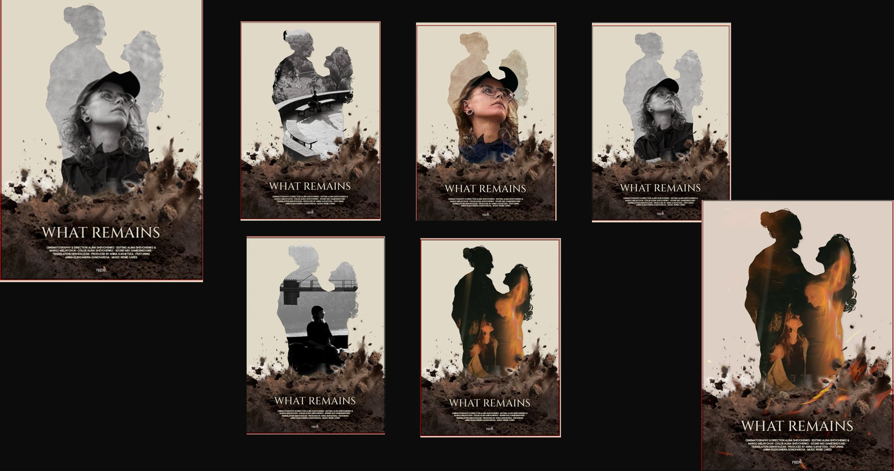
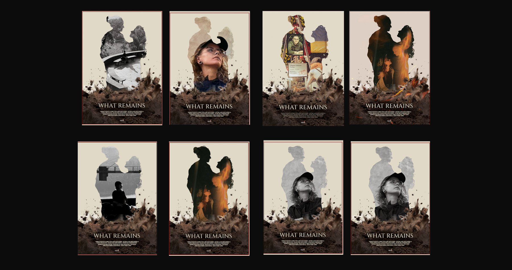

What Remains
Key art for the documentary What Remains, directed by Alina Shevchenko and produced by Anna Sukhetska.


Two versions were delivered. The memorial version is the print poster. At festival scale a viewer stands close to it, so the photograph, the flowers and the plaque all have room to be read. The embrace version is for digital. It is one silhouette with high contrast, so it still holds as a thumbnail in a feed, where the detail of the memorial version would be lost.
The film
After her partner Mariia, a Belarusian volunteer soldier, is killed in Ukraine, Anna is left with no legal standing in Mariia's life. She fights to honour Mariia's wishes and to hold on to her memory.
The brief
Print and digital versions of the poster, for European festival submissions and for social media.
Initial proposals
Key imagery explored at the proposal stage.


Variations on the chosen direction
The chosen direction built out across the cast and the locations in the film.


Process
Compositing the chosen direction, then building the final artwork for print and digital.
The two final versions
Credits
- Role
- Key Art Designer
- Year
- 2026
- Tools
- Illustrator, Photoshop
- Director
- Alina Shevchenko
- Produced by
- Anna Sukhetska